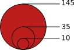

Since 2010 UNHCR have had to face a conjunction of severe humanitarian emergencies.
This map shows how financial resources, field offices number, emergency response teams deployment and asylum seekers outflows evolved over this period of time.
Legend:
- Number of Emergency Response Team staffs deployment.
 Number of *prima facie asylum seekers (major inflows only).
Number of *prima facie asylum seekers (major inflows only).- UNHCR offices (sub-office, branch office, field office, ...).
- Budget expenditures increase or decrease rate between 2010 and 2011 (No data for 2012).